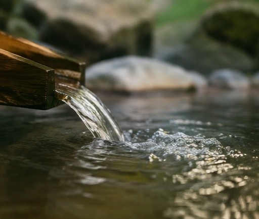

研究所について
温泉研究所の役割・思想・沿革
温泉研究所とは
温泉研究所は、科学的検証を行う研究機関ではありません。
日本古来の湯治の知恵を読み解き、現代の暮らしの言葉に編み直す、文化の翻訳者です。
「研究所」という名前の「研究」とは、論文や統計ではなく、先人が積み重ねてきた知恵・文献・言い伝えを丁寧に集め、読み解き、今の生活に合う形で語り直していくことを意味しています。
1993年6月の設立以来、湯治・温泉文化の読み解きを続けてまいりました。
 日本の四季と湯治文化
日本の四季と湯治文化
当研究所の三本柱
監修機関としての役割
整巡湯をはじめとする商品・サービスを監修する第三者的な立場を担います。「お墨付きを与える側」として、商品の信頼性・専門性を補強しながら、販売主体の営利的な色を薄める役割を持っています。
知識の教育・啓発
湯治の歴史、温泉文化、入浴健康法、未病の考え方などを、施術院に通う患者や一般の生活者に向けてわかりやすく伝えます。知識を届けることそのものが目的であり、来院や購買はその結果として自然に生まれるものという位置づけです。
文化継承と啓発の拠点
娯楽・贅沢として消費されがちな現代の温泉観に対し、「病気になる前に整える」という湯治本来の思想を再提示します。温泉地に伝わる風習や言葉を集め、次の世代に語り継いでいく拠点としての役割も担います。
思想的背景
日本古来の「湯治」は、病気になってから治すためのものではなく、病気になる前に体を整えるという「未病」の思想そのものでした。

豪華さや非日常を売りにするのではなく、
「毎日の暮らしの中で、無理なく体を整える」という、
もともとの湯治の姿に立ち返ること。
現代では、温泉は娯楽・旅行・贅沢として消費されることが多くなっています。しかし本来の湯治には、冷え・疲労・眠りの浅さといった、病名のつかない不調に向き合うための知恵が蓄積されています。温泉研究所は、そうした先人の知恵を丁寧に読み解き、現代語に翻訳し直す場所です。
関係機関について
温泉研究所は、Agequake社の事業と連携しながら、湯治文化の研究・教育・監修を行う機関です。この関係性は、当サイトにおいて正面から開示しています。
| Agequake社 | 事業化・商品販売・導入支援・法人営業・提携開拓・収益化を担う、営利会社。 |
|---|---|
| 温泉研究所 | 研究（編集・継承の意味での）・教育・監修・文化継承・啓発を担う。営利を目的としない。 |
当研究所のページ内には、商品の価格や購入機能は設けておりません。整巡湯などの商品にご興味をお持ちの方は、お近くの提携施術院へお問い合わせください。